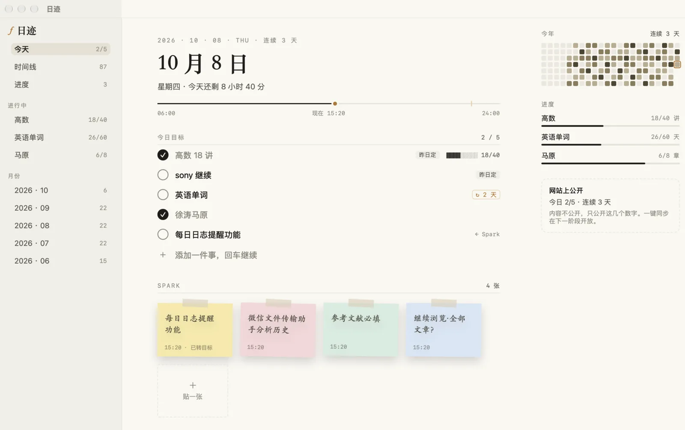
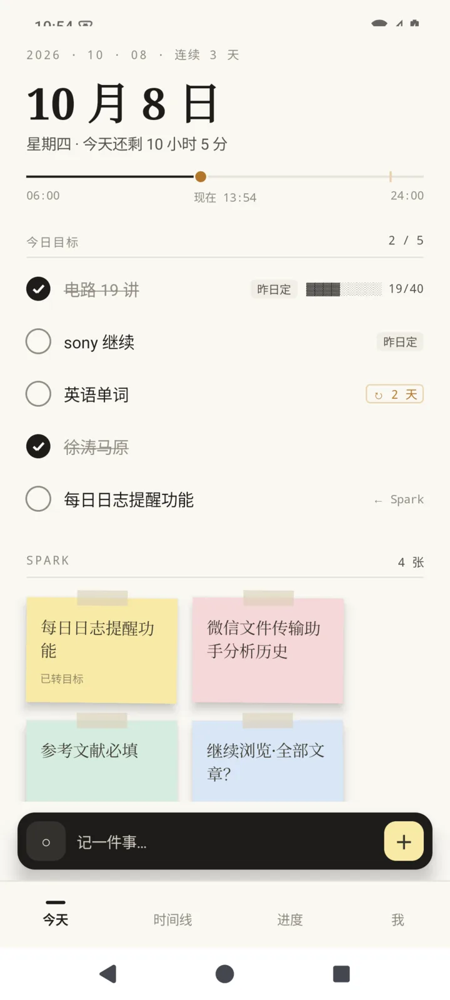

从早上的第一行，到晚上的最后一句。
日迹不让你维护一套系统。它只是把每一天接起来：昨晚的一句话，变成今早的第一件事。
昨晚写的，在第一行
明日目标在零点后自动排进今天第一行，标着「昨日定」。不用再抄一遍。
一闪而过的，贴一张
灵感贴成 Spark 便利贴；写「高数 18 讲」，勾掉时长期进度自己往前走。
只提缺的那一样
总结写了就只问明天，目标定了就只问总结。都写好了，今晚安安静静。
还空着？发封邮件
通知被划掉也没关系：一封邮件送到你常看的邮箱，一天最多一封。
没做完的，自己跟上
未完成的事带到明天，记着「↻ 2 天」。删掉，就是放下。


少即是多，但该有的都在。
晚上写下明天，明早它就在第一行
今日总结与明日目标在页尾一张卡里。零点一过，目标排进新一天的「今日目标」；和没做完的事重名的，只留一条。
长期进度，自己往前走
写「高数 18 讲」「马原 第 6 章」，自动归到对应的进度；勾掉，进度就推进。
Spark：一闪念，贴一张
四种纸色，手写字。哪张想做了，右键变成今天的目标。
一年的格子
每天一格，颜色越深做得越多；今天描一道赭色的边。
纸与墨，白天黑夜
米白的纸、墨色的字、一点赭石。深色模式不是反色，是夜里的另一张纸。
提醒得刚刚好
到点时日迹先看一眼今天：缺总结就问总结，缺目标就问明天，都写好了就不打扰。通知之后仍空着，再发一封邮件兜底，可以同时发给 QQ、163、Gmail、Outlook。
没做完的，自己跟上
没勾的事第二天自动出现在最上面，记着带了几天；原来那天留着灰色的记录，历史不改写。删掉，就是放下。
你的日子，只属于你。
日迹和作者的个人网站连在一起，但只交出你点头的那一点点。
服务器只见密文
Mac 和手机端到端加密同步：密钥只在你的设备上，配对时当面核对 6 位比对码；离开设备的每一段都先用 AES-256-GCM 加密，腾讯云只存密文。
同步 · 已上线提醒只看数字
邮件兜底只知道今天的几个数字：总结写没写、目标几条、完成几件。笔记内容从不离开你的设备。
已上线公开什么，你说了算
网站上只出现你允许的数字，比如「今日 3/5 · 连续 12 天」。想发成一篇日志，也要你点一下。
网站连接 · 下一阶段在你每天都会打开的地方。
先做了 macOS 和 Android；iPhone、iPad 与 Windows 在路上。
Android
荣耀等国行机型无需谷歌服务；在「我 → 同步」输入 Mac 上的配对码即可与 Mac 一体。安装时允许「未知来源」即可，不需要自启动或后台运行。
下载 APKiPhone · iPad
已经能编译，等适配好手势与小屏再发布。
Windows
同一套同步协议，换一副外壳。
# 想自己编译？ git clone https://github.com/Functionhx/riji cd riji/apple/Riji && xcodegen generate && open Riji.xcodeproj # macOS：选 RijiMac，⌘R cd riji/android && ./gradlew :app:installDebug # Android